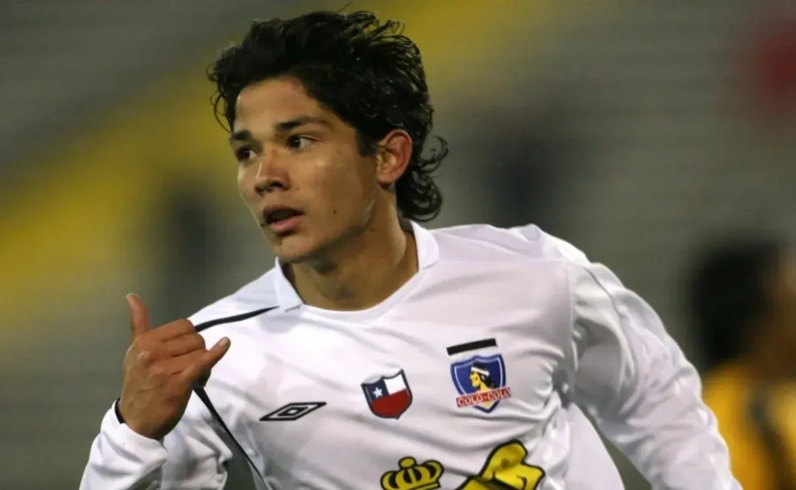
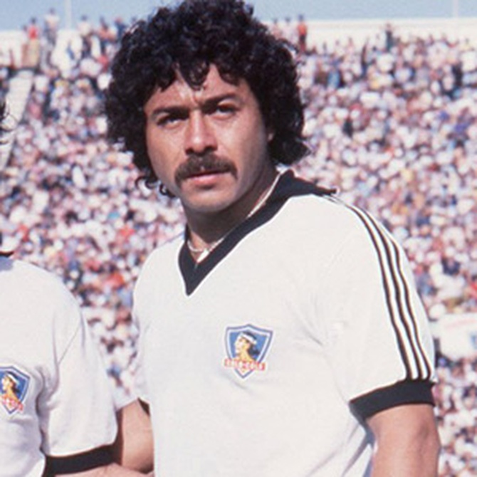
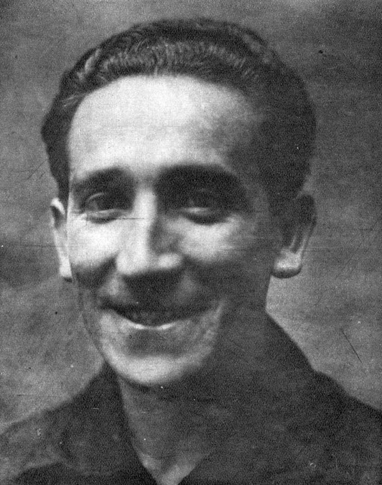

Matias Fernández
Mediocampista chileno, habilidoso y con gran pegada. Ganó el Balón de Oro Sudamericano en 2006.
Esteban Paredes
Máximo goleador histórico del fútbol chileno. Líder de Colo-Colo y reconocido por su olfato goleador.

Carlos Cazeli
Delantero icónico de Chile y Colo-Colo. Técnico y goleador, jugó en los Mundiales de 1974 y 1982.

David Arellano
Futbolista y fundador de Colo-Colo. Fue una figura clave en el desarrollo del club y falleció jugando en 1927.